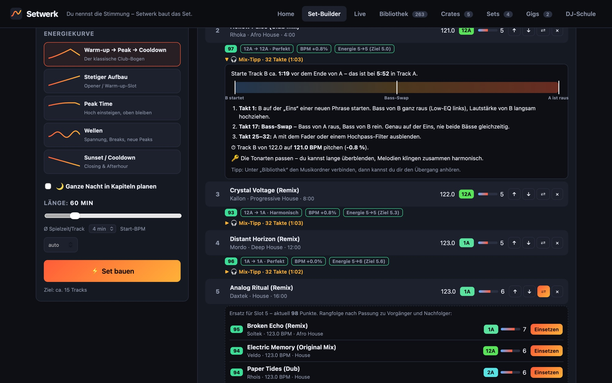
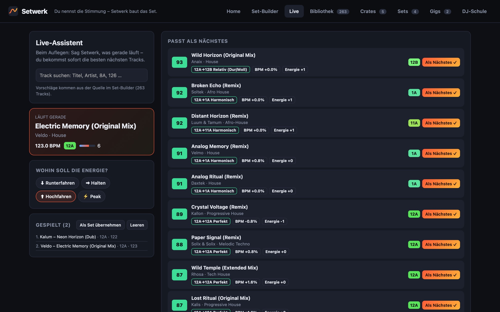
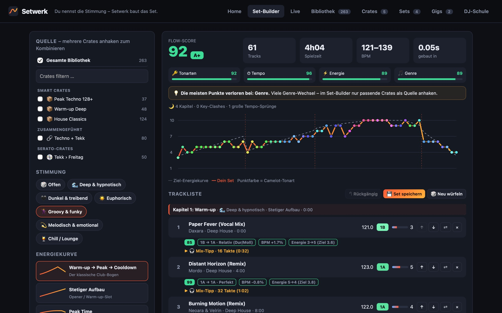
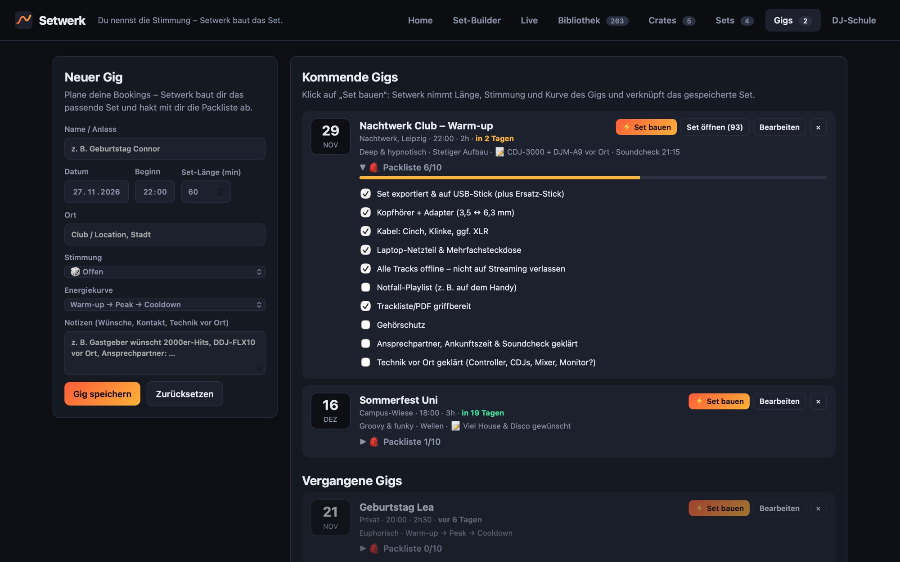
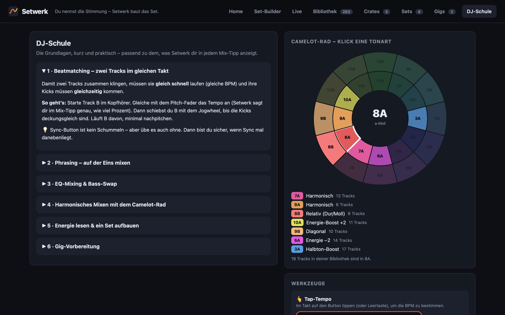
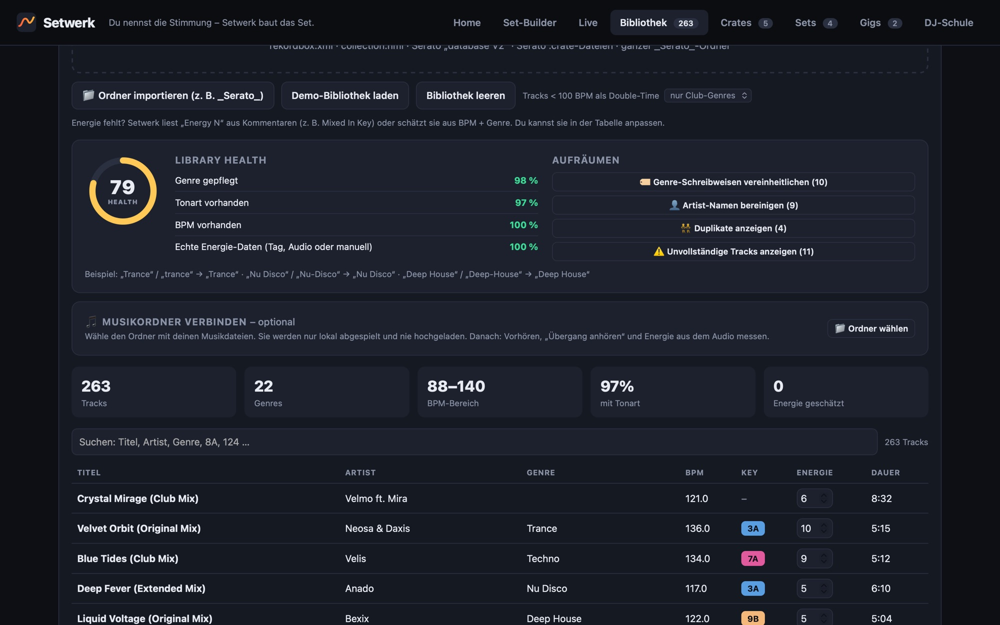
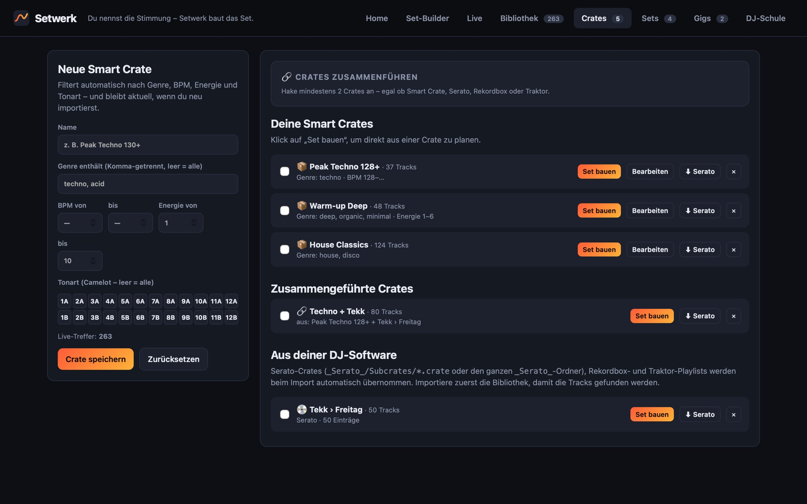

Vom Crate zum fertigen Set –
in unter einer Minute.
Setwerk bewertet jeden einzelnen Übergang und erklärt dir, warum er funktioniert. Perfekt für Einsteiger – und schnell genug für Profis.
Ein bewertetes Set in Sekunden
Wähle Stimmung, Energiekurve und Länge – Setwerk durchsucht deine ganze Bibliothek nach den Tracks, die am besten zusammenpassen.
- Flow-Score von 0–100, aufgeteilt in Tonarten, Tempo, Energie und Genre
- „Die meisten Punkte verloren bei …“ – mit konkretem Tipp
- 7 Stimmungen, 5 Energiekurven, beliebig viele Crates kombinierbar

Jeder Übergang – Schritt für Schritt
Zu jedem Übergang sagt dir Setwerk, wann du Track B startest, wie weit du pitchen musst und wann der Bass-Swap kommt.
- Länge in Takten und Sekunden, passend zu Tonart und Tempo
- „Übergang anhören“ – tempo-angepasst, mit Bass-Swap
- 3 Ersatz-Tracks pro Slot, mit einem Klick getauscht

Was passt als Nächstes?
Beim Auflegen sagst du Setwerk, was gerade läuft – und ob die Energie hoch, gleich oder runter soll. Sofort bekommst du die besten nächsten Tracks.
- Vorschläge nach Tonart, Tempo und Energierichtung
- Verlauf der gespielten Tracks – danach als Set speichern
- Funktioniert auch auf dem Handy neben dem Controller

Kapitel: Warm-up, Peak, Closing
Plane einen ganzen Abend am Stück: jedes Kapitel mit eigener Stimmung und Kurve – und auch die Übergänge zwischen den Kapiteln sind echte Mixes.
- Vorlagen für Club-Nacht, Party, Bar und Festival
- Bis zu mehreren Stunden, auf die Minute geplant
- Für jeden Gig mit einem Klick das passende Set

Gigs & Packliste
Termine planen, Set verknüpfen und vor dem Gig die Packliste abhaken – USB-Stick, Kopfhörer, Kabel.
Library Health
Findet Duplikate, fehlende Tonarten und unordentliche Genres – und räumt mit einem Klick auf.
DJ-Schule
Beatmatching, Phrasing, EQ-Mixing, interaktives Camelot-Rad, Tap-Tempo und Pitch-Rechner.
Smart Crates
Filter nach Genre, BPM, Energie und Tonart – oder deine Serato-Crates übernehmen und zusammenführen.
Energie aus dem Audio
Verbinde deinen Musikordner: Setwerk misst die Energie jedes Tracks direkt aus der Datei.
Export überall hin
Serato-Crate, Rekordbox-XML, M3U8 und eine PDF-Trackliste mit deinem eigenen Branding.



